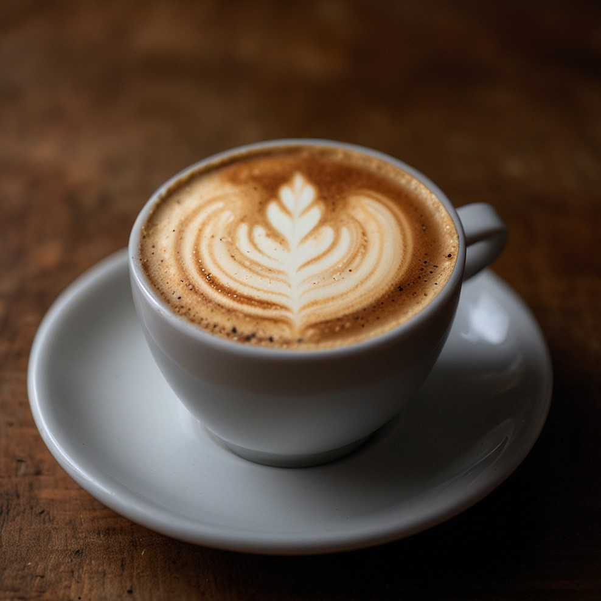

{% extends 'base.html' %}
{% block title_page %}
Рецепт Капучино
{% endblock %}
{% block name_of_coffee %}
Капучино
{% endblock %}
{% block image_coffee %}

{% endblock %}
{% block ol_recipe %}
Рецепт приготовления:
Двойную порцию эспрессо (60 мл) налить в заранее подогретый паром высокий кофейный
бокал или чашку объемом минимум 180 мл.
Нагреть молоко до 60-70 °C, затем взбивать его капучинатором, венчиком или миксером
в мелкую пену, пока объем не удвоится.
Придерживая пенку ложкой, добавить молоко в эспрессо, по желанию подсластить сахаром
и перемешать. Сверху выложить пену.
{% endblock %}
{% block table_of_propor %}
| Кофе эспрессо |
Молоко |
| 60 мл |
60 мл |
{% endblock %}